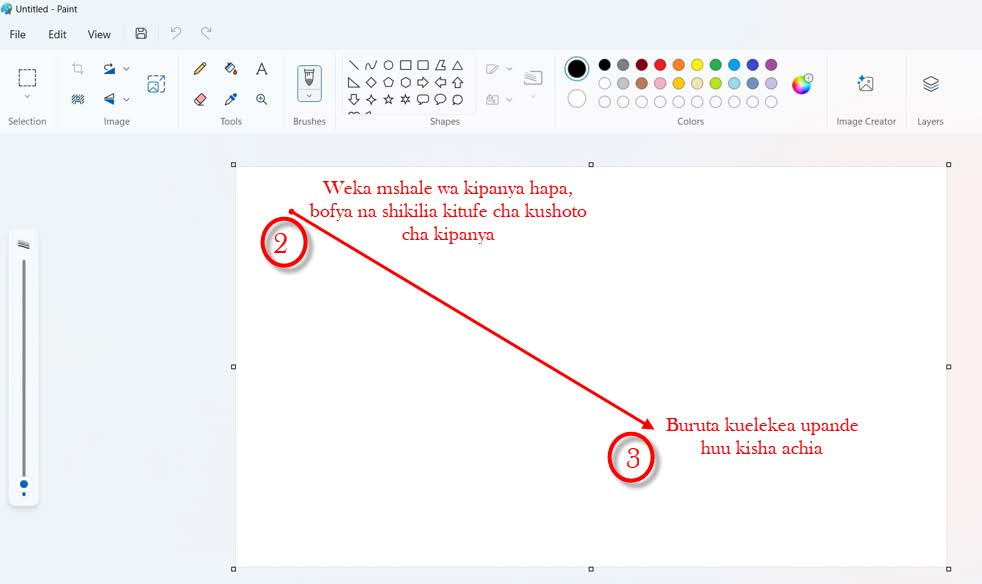
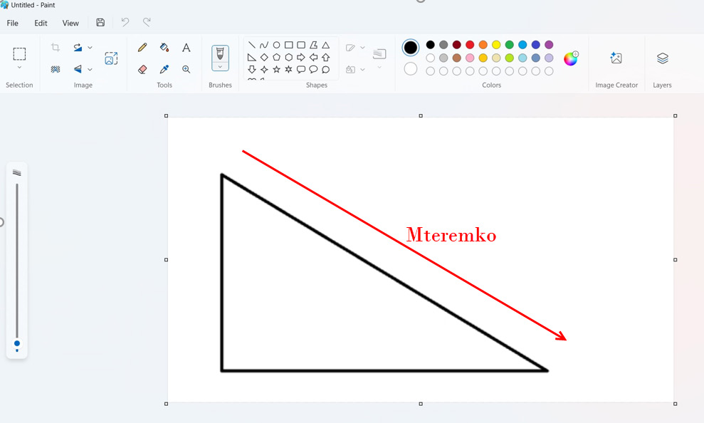

2.
Weka mshale wa kipanya au tumia mishale kwenye eneo la kuchora.
3.
Bonyeza kitufe cha kushoto cha kipanya na ushikilie kisha, ukiburute kwa uelekeo kama inavyooneshwa katika Kielelezo namba 6.

Kielelezo namba 6 kinaonesha kuchora umbo la pembetatu mraba.
Maelezo ya Kielelezo namba 6: Kishale kinaonesha kuburuta kipanya ili kuchora pembetatu mraba.
4.
Utapata umbo la pembetatu mraba linalofanana na umbo lililopo katika Kielelezo namba 7.

Kielelezo namba 7 kinaonesha pembetatu mraba inayounda mteremko.
Maelezo ya Kielelezo namba 7: Pembetatu mraba iliyochorwa inaonekana kama mteremko.